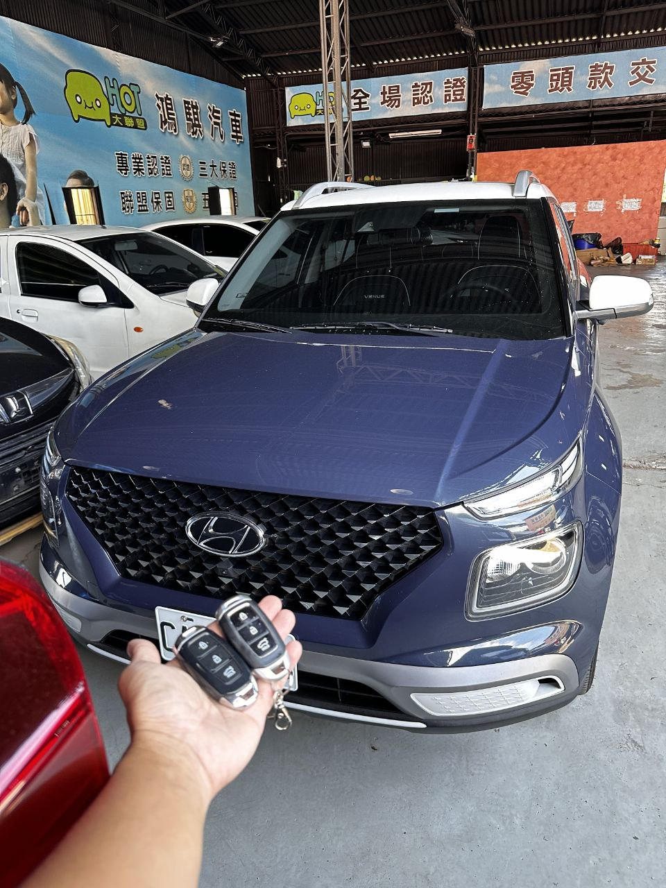
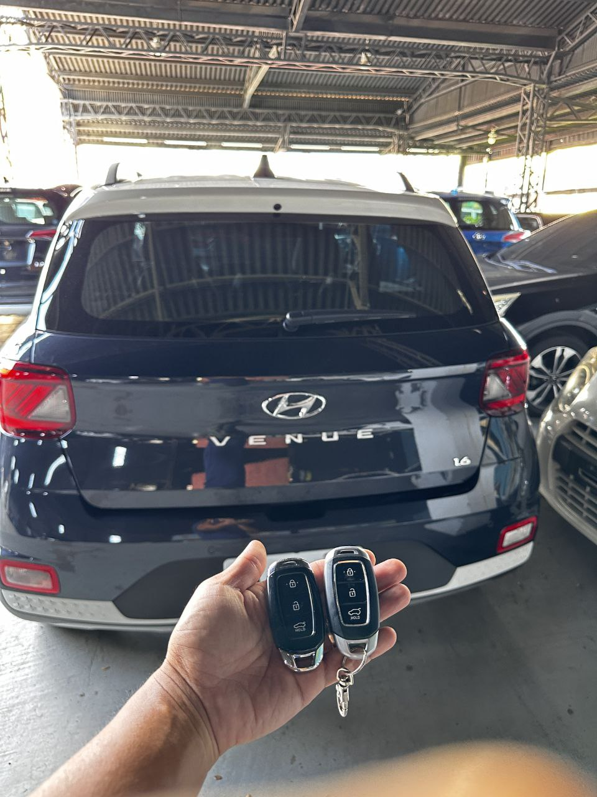

現場實拍：現代 VENUE 智能鑰匙數據讀取

任務達成：雙智慧鑰匙同步，功能完整恢復
案例背景：高效率的行動支援
這次的案例是一台廣受歡迎的小型休旅 Hyundai VENUE。車主在不慎遺失所有鑰匙後，面臨無法發動的窘境。極致核心接到通知後，立即派遣專業人員抵達現場。在這種情況下，我們不僅要解決「發動」問題，更要一次性為車主提供兩把全新的智慧感應鑰匙，徹底免除未來再次遺失的恐懼。
極致核心的技術優勢
原廠規數據對接
使用先進診斷工具與 VENUE 防盜系統進行安全通信，現場生成密鑰並同步至車輛防盜模組。
失效 ID 註銷
在匹配新鑰匙的同時，我們會協助將已失蹤的舊鑰匙權限從系統中徹底刪除，保障車主隱私與財產安全。
為什麼選擇極致核心？
- 現場作業：無需負擔昂貴拖吊費，也不必讓車輛在原廠排隊。
- 即刻完工：從抵達現場到匹配完成，縮短您的等待時間。
- 雙保險策略：提供現場兩把鑰匙製作優惠，讓您備份無憂。